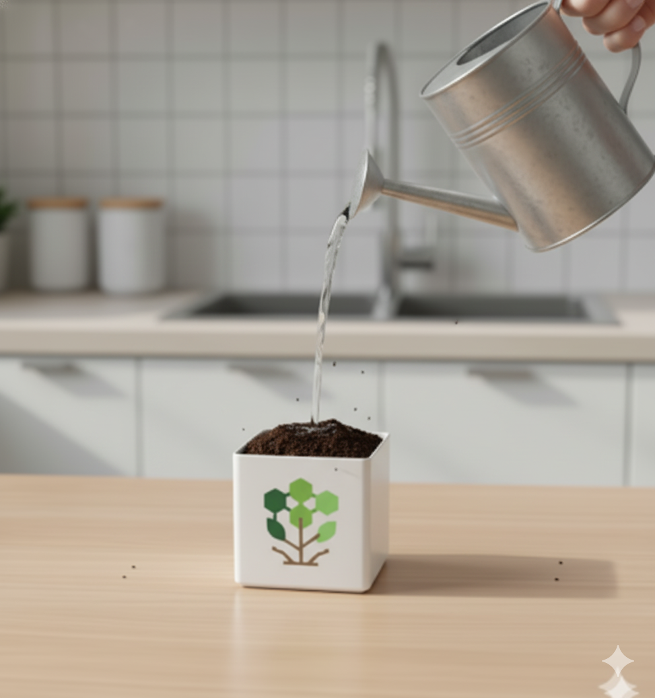
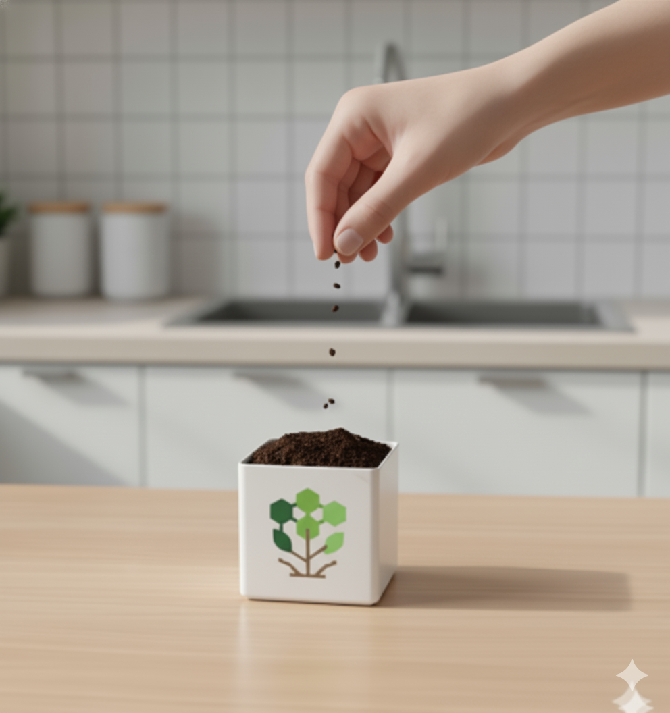
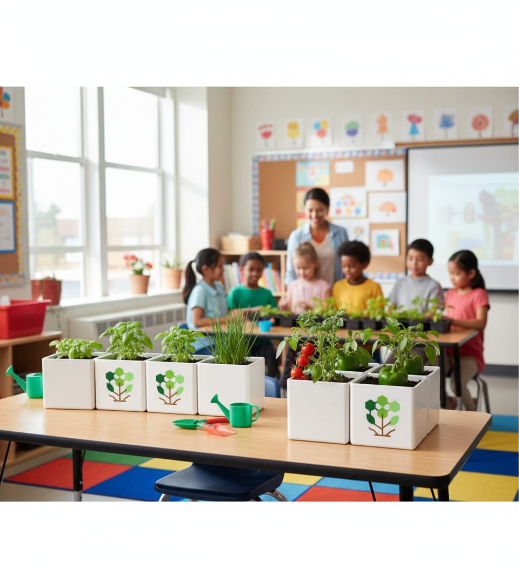

Conocimiento experto al alcance de tu mano: guías, consejos y tutoriales.
La clave es la consistencia, no la cantidad diaria. ¡Toca la tierra!
Fertiliza cada 4-6 semanas en primavera y verano con abono orgánico.
Inspecciona las hojas semanalmente. Actúa rápido con jabón potásico.
Identifica las bolsas de sustratos y semillas, primero llena las macetas con el sustrato dejando 2cm en la parte inferior para la semilla

Riégala suavemente la tierra, evitando que esté demasiado lodosa, pero asegúrate de que esté uniformemente húmeda. Esto facilitará el agarre inicial de la planta.
Coloca una o dos semillas de su eleccion en cada maceta. Tenga en cuenta que si usas más de dos, las plántas competirán por los nutrientes y la luz, debilitándose.
Cubre las semillas con el sustrato y compacte la superficie de la tierra con suavidad. Finalmente, une las macetas en un lugar de su preferencia
10 Consejos para comenzar
Las mejores plantas para principiantes
Cómo ser autosuficiente con un huerto
Como tener éxito con un huerto en macetas
Las mejores plantas que se pueden sembrar todo el año
Trucos para que tu huerto se llene de lombrices y tus cultivos crezcan sanos